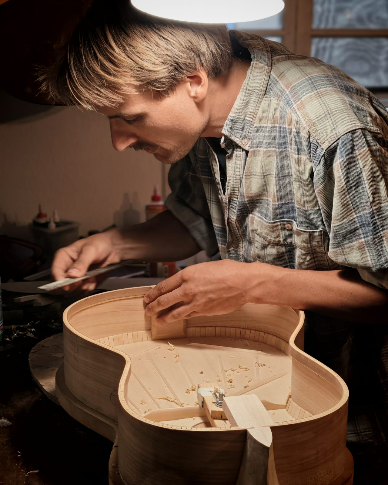

Neher Gitarren
Neher Guitares
Neher Guitars
Gitarrenbau mit Respekt für Holz, Klang und Umwelt
Lutherie respectueuse du bois, du son et de l'environnement
Guitarmaking with respect for wood, sound and the environment
Modell Circé
Modèle Circé
Model Circé
Die Gitarren #19 und #20 in der Entstehung
Les guitares #19 et #20 en cours de fabrication
Guitars #19 and #20 in progress
×

Gezeigt wird hier das Modell Circé, das durch seine klassische Formsprache überzeugt. Klanglich wird Intimität gesucht, die sich durch volle Bässe und einen strahlenden Diskant beschreiben lässt. Die Designaspekte des Instruments haben direkte spanische Vorbilder, vornehmlich Torres und Hernandez y Aguado, wobei die verwendeten Techniken als Mischung zwischen dem traditionell spanischen Gitarrenbau und einer modernen Herangehensweise bezeichnet werden können. Auch die Materialien sind aufgrund Verknappung der früher verwendeten Hölzer nicht dieselben: Verwendet werden ausschließlich europäische Hölzer, die möglichst kurze Transportwege hinter sich haben und die zum Großteil vom Unternehmen selbst vom Baum zum Tonholz begleitet werden. Als Deckenmaterial dient somit fast ausschließlich Fichte, während das Korpusmaterial variieren kann.
Le modèle Circé est présenté ici pour son langage formel classique. Sur le plan sonore, une intimité est recherchée, caractérisée par des basses pleines et des aigus brillants. Les aspects de conception de l’instrument ont des modèles espagnols directs, principalement Torres et Hernandez y Aguado, tandis que les techniques utilisées peuvent être considérées comme un mélange de lutherie espagnole traditionnelle et d’approches modernes. Les matériaux ne sont pas les mêmes en raison de la raréfaction des bois autrefois utilisés et pour éviter les dilemmes moraux : seuls des bois européens aux trajets de transport courts sont utilisés, la plupart étant suivis de l’arbre au bois sonore par l’entreprise elle-même. L’épicéa est utilisé presque exclusivement pour la table, tandis que le matériau de la caisse peut varier.
Here is the Circé model, notable for its classical design language. Sonically, intimacy is sought, with full bass and bright trebles. The design aspects of the instrument have direct Spanish models, mainly Torres and Hernandez y Aguado, with techniques that can be seen as a mix between traditional Spanish guitar making and a modern approach. Materials are not the same due to scarcity of previously used woods and ethical considerations: only European woods with short transport distances are used, most accompanied from tree to tonewood by the company itself. Spruce is used almost exclusively for the top, while the body material may vary.
Materialien
Matériaux
Materials
- Fichte (Decke)
- Ahorn (Hals/Boden/Zargen)
- Kirsche (Hals/Boden/Zargen)
- Esche (Boden/Zargen)
- Apfel/Birne (Boden/Zargen)
- Räuchereiche (Boden/Zargen/Zierelementes)
- Épicéa (table)
- Érable (manche/fond/éclisses)
- Cerise (manche/fond/éclisses)
- Frêne (fond/éclisses)
- Pomme/Poire (fond/éclisses)
- Chêne fumé (fond/éclisses/ornements)
- Spruce (top)
- Maple (neck/back/sides)
- Cherry (neck/back/sides)
- Ash (back/sides)
- Apple/Pear (back/sides)
- Smoked Oak (back/sides/trim)
Über
À propos
About

2015 begann Adrian Neher seine Lehrzeit an der staatlichen Berufsfachschule für Musikinstrumentenbau in Mittenwald. Nach deren erfolgreichem Abschluss folgte ein Bachelorstudium an der WHZ, das mit dem Meister-Titel sowie dem besten Instrument seines Jahrgangs beendet wurde. Hiernach komplettierte er erfolgreich seine akademische Ausbildung mit dem Master-Studium der Akustik und Technologie des Musikinstrumentenbaus, ebenfalls an der WHZ, wonach eine Selbständigkeit anschloss. Während der Ausbildung praktizierte er unter anderem bei Michael Batell, Adrian Heinzelmann, Simon Burgun und Christopher Schuetz, weitere starke Einflüsse kamen von Gabriel Seitner, Manuel Arango, Lisa Duchêne, Jakob Biehler, Christina Müller und Johanna Vogl.
En 2015, Adrian Neher a commencé son apprentissage à l’école professionnelle d’État pour la fabrication d’instruments de musique à Mittenwald. Après avoir obtenu son diplôme avec succès, il a poursuivi un bachelor à la WHZ, couronné par le titre de maître et le meilleur instrument de sa promotion. Par la suite, il a complété avec succès sa formation académique par un master en acoustique et technologie de la lutherie, également à la WHZ, avant de se lancer à son compte. Pendant sa formation, il a travaillé notamment chez Michael Batell, Adrian Heinzelmann, Simon Burgun et Christopher Schuetz; Gabriel Seitner, Manuel Arango, Lisa Duchêne, Jakob Biehler, Christina Müller et Johanna Vogl ont également exercé une forte influence.
In 2015, Adrian Neher began his apprenticeship at the state vocational school for musical instrument making in Mittenwald. After successfully completing it, he pursued a Bachelor’s degree at the WHZ, which he completed with the master title and the best instrument of his year. He then successfully completed a Master’s in Acoustics and Technology of Musical Instrument Making, also at WHZ, before becoming self-employed. During his training, he worked with Michael Batell, Adrian Heinzelmann, Simon Burgun, and Christopher Schuetz; further strong influences came from Gabriel Seitner, Manuel Arango, Lisa Duchêne, Jakob Biehler, Christina Müller and Johanna Vogl.
Leistungen
Services
Services
Neben dem Neubau von Instrumenten sind in der Werkstatt ebenfalls hochwertige Reparaturen möglich. Sich lösende Stege, Deckenrisse oder gebrochene Köpfe sind keinesfalls das Ende eines guten Instruments und können von Neher Gitarren professionell behoben werden. Auch Anpassungen an individuelle Bedürfnisse sowie selbstverständlich Einstellarbeiten gehören zum Repertoire, wobei sich hierbei nicht auf klassische Konzertgitarren beschränkt wird: Auch E-Gitarrist:innen, Bassist:innen und Steelstring-Liebhaber:innen sind herzlich willkommen.
Outre la fabrication d’instruments, l’atelier propose également des réparations de haute qualité. Des chevalets décollés, des fissures de table ou des têtes cassées ne signifient en aucun cas la fin d’un bon instrument et peuvent être réparés professionnellement par Neher Guitars. Les ajustements aux besoins individuels ainsi que les réglages font également partie du répertoire, sans se limiter aux guitares classiques de concert : les guitaristes électriques, bassistes et amateurs de steelstring sont également les bienvenus.
In addition to building new instruments, the workshop also offers high-quality repairs. Lifting bridges, top cracks, or broken heads are by no means the end of a good instrument and can be professionally fixed by Neher Guitars. Adjustments to individual needs and, of course, setup work are also part of the repertoire, not limited to classical concert guitars: electric guitarists, bassists, and steel-string enthusiasts are warmly welcome.
Impressum
Mentions légales
Imprint
Neher Gitarren
40 Place Reboul
84210 Pernes les Fontaines, Frankreich
Lutherie Neher
40 Place Reboul
84210 Pernes les Fontaines, France
Neher Guitars
40 Place Reboul
84210 Pernes les Fontaines, France